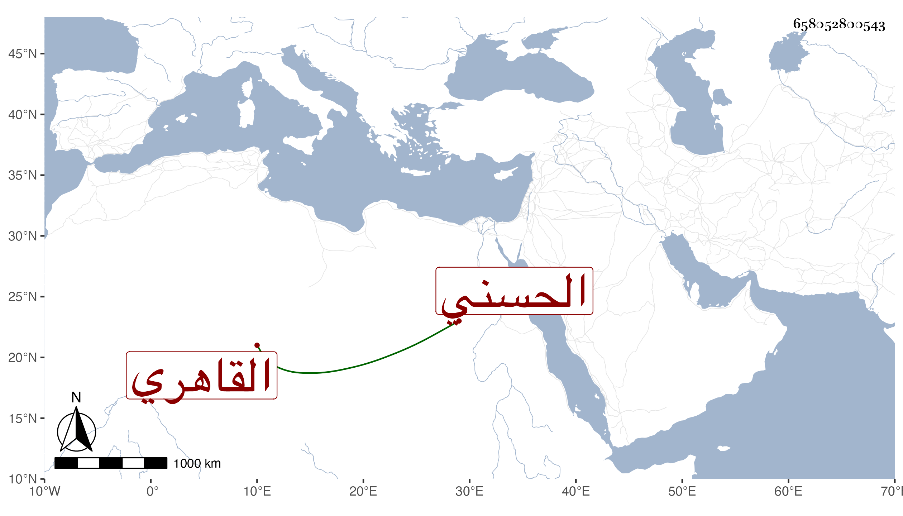

0902Sakhawi.DawLamic.ITO20230111-ara1.EIS1600.658052800543
Biography ID: 658052800543
353
محمد بن إسماعيل الشمس الحسني القاهري نزيل تربة سعيد السعداء بل تربتها وأحد صوفية الخانقاه ممن سمع بقراءتي بالقرا سنقرية الشمائل وغيرها . مات عن أزيد من ثمانين سنة فيما قيل في ربيع الثاني سنة أربع وثمانين ويذكر باعتقاد ابن عربي وبإدخاله غير الصوفية في التربة طمعا في ما يصل إليه عفا الله عنه .
